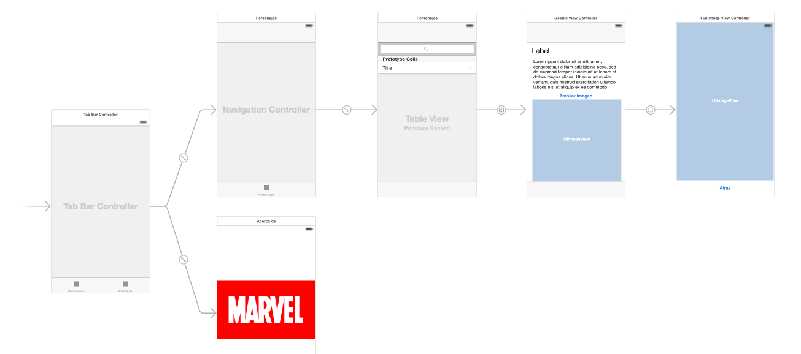
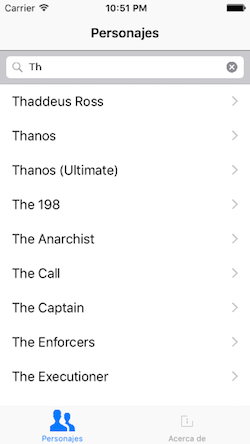
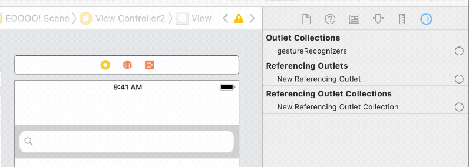

Proyecto de la asignatura de interfaces de usuario, parte de iOS básico¶
Este "miniproyecto" trata de hacer una pequeña aplicación basándose en el API de la editorial Marvel, que nos permite consultar información sobre los personajes, los comics, las series,...
Pasos iniciales¶
Registro en la API de Marvel¶
Para poder usar la API de Marvel hacen falta claves de desarrollador. La plantilla de proyecto disponible en la web ya tiene unas incorporadas. Con esas claves se pueden hacer 3000 peticiones diarias al API, probablemente suficientes para su uso en clase. No obstante también puedes registrarte desde el portal de desarrolladores de Marvel para poder obtener claves propias.
Acceso a la API¶
La API de Marvel es REST, por lo que acepta peticiones HTTP. No obstante hacerlas directamente con los APIs de iOS sería un poco engorroso, por lo que vamos a usar un par de librerías que nos faciliten no solo hacer la petición en sí sino sobre todo parsear el JSON. Usaremos una librería adicional llamada Marvelous, que encapsula las llamadas al API en una serie de clases de modo que no tenemos que hacer peticiones HTTP directamente.
IMPORTANTE: para acelerar el trabajo en el aula tenéis disponible en moodle la plantilla de workspace ya creada.
Uso de la plantilla de proyecto¶
En la plantilla de workspace descargada abre el fichero Marvel.xcworkspace, que es un workspace de Xcode (un conjunto de proyectos), no el proyecto Marvel directamente (NO ABRAS DIRECTAMENTE el Marvel.xcodeproj). Si lo has abierto correctamente, deberías ver dos proyectos, uno llamado Marvel, y otro llamado Pods. El proyecto principal es el primero, el segundo son librerías auxiliares.
Si quieres ver más información sobre la estructura del proyecto, o cómo crearlo partiendo de cero, puedes verlo en el Apéndice
Primero hay que hacer un Product > Clean Build Folder, y Product > Build para asegurarse de que las dependencias están compiladas y accesibles en nuestro código. Una vez hecho esto podemos ejecutar la app, en la consola aparecerá una lista de personajes cuyo nombre empieza por "Spider". Puedes mirar el código del View Controller para ver cómo se ha hecho.
Una vez hecho el build, puedes comprobar si la conexión con el API funciona bien ejecutando la aplicación, no verás nada en la pantalla del simulador pero en la consola de Xcode debería aparecer una lista de personajes que comienzan por "spider". Puedes examinar el código del view controller para ver cómo se ha hecho, usamos una librería auxiliar llamada Marvelous que implementa el acceso al API de forma sencilla.
Estructura que debe tener la aplicación¶
Para que te hagas una idea de la estructura, se muestra el storyboard de la aplicación ya terminada

En la aplicación se podrá buscar, listar y mostrar los detalles de alguno de los recursos que ofrece el API. Elige tú lo que prefieras: personajes, comics, creadores...
Pantalla inicial¶
Puedes comenzar creando un tab bar a partir de la pantalla inicial: selecciónala y en el menú Editor elige Embed In > Tab Bar Controller.
Vista maestro (2 puntos)¶
Esta debe ser una pantalla con una barra de búsqueda y una vista de tabla en la que se puede buscar y listar el recurso elegido (por ejemplo personajes). El resultado final será algo como:

Ve a la primera (y por el momento única) pantalla de contenido del tab bar, selecciona la barra inferior y en las propiedades bar item ponle un título apropiado (por ejemplo "Personajes") y un icono relevante.
Recuerda que tienes unas cuantas webs de donde puedes coger iconos "planos", por ejemplo https://www.iconfinder.com/iconsets/ios-7-icons o http://www.flaticon.com/packs/line-icon-set
Crear los componentes de la interfaz¶
La tabla:
- Arrastra una table view a la pantalla de "personajes" (o "comics", o lo que hayas elegido)
- Selecciona la tabla y en las propiedades crea un prototipo de celda incrementando el
Prototype cellsa 1. - Selecciona el prototipo de celda recién creado (el
table view cell) y en las propiedades elige comostyleel valorBasic, para poder usar uno de los tipos predefinidos de celda y no tener que hacerlo tú.
La barra de búsqueda:
- Arrastra un componente de tipo search bar a la pantalla y déjalo justo arriba de la tabla.
Nos falta fijar el autolayout:
- Selecciona barra y tabla manteniendo pulsada la tecla
Cmde inserta ambas en un stack view utilizando el primero de los botones de autolayout (parte inferior derecha del *storyboard) - Haz que este stack view ocupe toda la pantalla. Lo más sencillo es ponerle 4 restricciones de distancia 0 a los bordes.
Una vez hecho esto puedes poner en marcha la app para ver si la interfaz tiene buen aspecto. La tabla aparecerá vacía, por supuesto.
Gestionar la barra de búsqueda¶
La barra de búsqueda utiliza el patrón delegación para gestionar los eventos de escribir en ella, pulsar "buscar" en el teclado, etc.
El objeto que actúe como delegate de la barra de búsqueda debe implementar el protocolo UISearchBarDelegate. Puede ser cualquiera, aunque siguiendo la filosofía MVC (Monster View Controller) haremos que sea el view controller de la pantalla actual :).
Vamos a crear este view controller:
- Crea una nueva clase de Cocoa Touch llamada
ListaControllery haz que sea una subclase deUIViewController - Asígnale ese controller a la pantalla de lista que has creado antes. Recuerda que esto se hace a través del
identity inspector.
Ahora vamos a conectar el view controller con la barra de búsqueda:
- Selecciona la search bar (te será más fácil si lo haces en el árbol de componentes) y en el
connections inspector(panel de la derecha de Xcode, icono de más a la derecha) conecta el outletdelegatecon el controller de esta pantalla. Recuerda que el controller está representado gráficamente con un icono de color amarillo que aparece en la parte superior de cada pantalla de la app en el storyboard.

Si has hecho esto ya no es necesario que establezcas la conexión por código, asignando la propiedad
delegatede la barra de búsqueda al controller
- Pon en la cabecera
ListaControllerque esta clase implementa el protocoloUISearchBarDelegate - En el
ListaControllerimplementa el métodosearchBarSearchButtonClicked(_), que se llamará cuando se escriba algo en la barra y se pulse el botón del teclado "buscar". Para probar que funciona de momento basta que imprimas en la consola el texto escrito en la barra y quites el teclado on screen.
1 2 3 4 | func searchBarSearchButtonClicked(_ searchBar: UISearchBar) { print("Buscado: \(searchBar.text!)") searchBar.resignFirstResponder() } |
Ejecuta la app y comprueba que efectivamente funciona.
Ahora tendrás que poner código propio para que cuando se pulse en el botón de buscar se haga la llamada a la API de Marvel. Por el momento lo más simple es mostrar los resultados con print. Puedes asignárselos también a un array que sea una propiedad del controller, para que luego sean sencillos de mostrar en la tabla.
Mostrar los resultados en la tabla¶
Una vez conseguido esto, tendrás que hacer que los resultados aparezcan en la tabla. Recuerda que necesitas un datasource para ella, y que para simplificar puedes hacer que sea el ListaController. A grandes rasgos esto implica:
- Que, como decíamos antes, el controller debe tener acceso a los datos, por ejemplo guardándolos en una propiedad que sea un array.
- Que tienes que conectar en el
connections inspectorel outletdatasourcecon el controller. - Que el
ListaControllerdebe implementar el protocoloUITableViewDataSource. Hay que poner en la cabecera que esto es así, y además implementar los correspondientes métodos en el código del controller, uno para devolver el número de filas en la tabla y otro para devolver una celda dado suindexPath.
Cada vez que se haga una búsqueda y se añadan datos al array tendrás que decirle a iOS que vuelva a redibujar la tabla llamando a su método reloadData. Cuidado, porque al ser una actualización de la interfaz debes asegurarte de que esto lo estás haciendo desde el thread principal, algo como:
1 2 3 4 5 | //sustituye self.vistaTabla por el outlet que hayas definido //para acceder a la tabla desde el controlador OperationQueue.main.addOperation() { self.vistaTabla.reloadData(); } |
Obtener la cola principal de operaciones explícitamente es necesario si, como es lo más lógico, colocas el código anterior en el bloque que obtiene la respuesta del API de Marvel. Recuerda que para evitar bloqueos, Marvelous funciona de modo asíncrono en un thread distinto al principal
Una vez terminado todo esto, esta pantalla debería ser casi totalmente funcional. Solo quedaría ver los detalles de cada item al hacer tap sobre él.
Opcionalmente (0,25 puntos extra), puedes hacer que aparezca un spinner mientras se está procesando la petición, para que el usuario sepa que el sistema está esperando datos. Los spinners en iOS se denominan Activity Indicators. Puedes consultar la referencia de la clase UIActivityIndicator para ver la forma de uso, aunque es muy sencillo, básicamente debes hacer startAnimating para que empiece a girar y stopAnimating para pararlo.
Es posible que el activity indicator se te quede detrás de los otros elementos de interfaz y no se vea. Puedes usar el método
bringSubviewToFrontque se llama desde la vista "madre" para pasar a una vista "hija" a "primer plano". Si estamos en el controller sería algo comoself.view bringSubview(toFront:self.miActivityIndicator), ya que recuerda queself.viewen un controller es la vista principal. Tendrás que sustituir la referenciaself.miActivityIndicatorpor la apropiada en tu caso. Además de esto lleva cuidado también con el color, otro problema típico es usar uno del mismo color que el fondo.
Vista de detalle (1,5 puntos)¶
La nueva pantalla mostrará los datos de un item al hacer tap. Como una vez en los detalles queremos poder volver atrás al listado de forma sencilla, lo mejor es usar un navigation controller:
El navigation controller¶
En este apartado todavía no estamos implementando la vista de detalle, solo creando la jerarquía de navegación.
- Selecciona la pantalla de lista y elige la opción de menú
Editor > Embed In > Navigation Controller. Aparecerá un nuevo navigation controller que tiene como primer nivel de navegación a la pantalla de lista de items. - Fijate que en la parte superior de la pantalla de items habrá aparecido un espacio reservado para el título y los botones de navegación. Esto puede haber "trastocado" en modo diseño el resto de los elementos de la interfaz (aunque cuando se ejecute la app deberían seguir funcionando bien). Recuerda que puedes volverlos "a su sitio" en modo diseño con el
Update Framesdel autolayout. - Selecciona la nueva barra de título de la vista de lista y en las propiedades pon como
titleel recurso que estás mostrando (personajes, autores, comics,...).
La pantalla de detalles del item¶
Esta sería la que muestra todos los datos de un personaje, comic, creador,... junto a su imagen si es que la tiene.
Si quieres usar una tabla estática para diseñar esta pantalla debes usar como controller una clase que herede de
UITableViewController
Creación de la interfaz y conexión con la pantalla anterior¶
- Arrastra un "view controller" al storyboard
- En la pantalla anterior, haz
ctrl+arrastrarentre la celda prototipo y la pantalla actual. Elige el tipo adecuado de segue. - Implementa una clase
DetalleViewControllerque herede deUIViewControllery asóciala a esta pantalla.
Implementación de la funcionalidad¶
- Define en el
DetalleViewControlleruna propiedad del tipo de recurso que estés mostrando (RCCharacterObject,RCComicsObject,RCCreatorObject,...) - En el
prepareForSeguede la pantalla de lista instancia esta propiedad para que contenga el objeto a mostrar. Para saber qué fila de la tabla se ha seleccionado puedes seleccionar la propiedad del objeto tabla llamadaindexPathForSelectedRow, que almacena elindexPathde la fila seleccionada. La propiedadrowde este index path es el número de fila. - Usa los componentes que consideres necesarios para mostrar los datos del objeto (no es necesario que sean todos, solo los que quieras, para probar que funciona). Tendrás que crear un outlet por cada campo, y rellenar los campos en el
viewDidLoaddel controller. Puedes consultar la referencia de clases en la documentación online de Marvelous para saber qué propiedades tiene cada objeto. La referencia está en Objective-C pero no es difícil deducir qué es cada propiedad - Entre otras cosas, en esta pantalla deberías mostrar la imagen del personaje, comic, creador o lo que sea que hayas elegido, a un tamaño relativamente pequeño. La carga de la imagen deberías hacerla en un hilo secundario, para no paralizar la interfaz de usuario si la imagen tarda en cargarse:
1 2 3 4 5 6 7 8 9 10 11 12 13 14 15 16 17 18 19 20 21 22 | let colaBackground = OperationQueue() colaBackground.addOperation { //SUPONIENDO que la variable con el personaje se llama "personaje" if let thumb = personaje.thumbnail { let url = "\(thumb.basePath!)/portrait_uncanny.\(thumb.extension!)" //cambiamos la URL por https://. Necesario en iOS>=9 let urlHttps = url.replacingOccurrences(of: "http", with: "https") if let urlFinal = URL(string:urlHttps) { do { let datos = try Data(contentsOf:urlFinal) if let img = UIImage(data: datos) { OperationQueue.main.addOperation { //suponiendo que el outlet de la imagen se llama "miImagen" self.miImagen.image = img } } } catch { } } } } |
Puedes consultar esta página para ver el formato de las URL de las imágenes. Básicamente se construyen con una trayectoria base seguidas de un "modificador" de aspecto y tamaño (portrait_small, landscape_medium, ...) y la extensión del archivo.
En el código anterior se obtiene la URL de la imagen y luego se cambia el
http:porhttps:. En iOS>=9 una app no puede hacer una petición a una URL web si no es conhttps:. Esto debería cambiarse en la propia libreríaMarvelous, pero podemos salir del paso con este pequeño parche.
Imagen a tamaño completo (1 punto)¶
Implementa una nueva pantalla en la que se pueda ver solo la imagen a mayor tamaño. Haz que la transición se realice con un segue modal pulsando sobre algún botón "ver imagen ampliada" (si tienes activadas las size classes el tipo equivalente es present modally).
En el API de Marvel, la URL de la imagen a tamaño completo se consigue simplemente concatenando las propiedades basePath y extension, y añadiendo un punto entre ellas, de modo que sería prácticamente igual al código para cargar la imagen en la pantalla anterior pero sin poner el "modificador" (en el ejemplo era portrait-uncanny).
La pantalla debe tener algún botón o similar para volver a la anterior.
Vista "Acerca de" (0,25 puntos)¶
Esta es la segunda de las pantallas del tab bar. Simplemente debe consistir en una imagen estática y un text view con información sobre la aplicación.
Apéndice: creación de la plantilla de proyecto desde cero¶
Esta sección está solo para que veas cómo se ha creado la plantilla de proyecto, no es necesario que lo hagas si has usado la plantilla que está en moodle.
Hasta Xcode 11 no había ningún sistema de gestión de dependencias de librerías de terceros para iOS incluido en el IDE. Desde Xcode 11 tenemos el Swift Package Manager, pero durante todo el tiempo que no ha existido una herramienta propia de Apple, la comunidad ha tenido que "cubrir ese hueco" desarrollando gestores de paquetes para iOS. Probablemente el más conocido seaCocoaPods que es el que vamos a usar aquí.
Cocoapods es a la vez un repositorio de librerías y un gestor de dependencias para instalar automáticamente estas librerías en nuestros proyectos. Hay muchas librerías de terceros disponibles con este sistema, puedes buscarlas desde la página de CocoaPods.
Para instalar cocoapods, desde la terminal hacer
1 2 | #Con --pre decimos que queremos instalar la última versión, aunque sea RC
sudo gem install cocoapods --pre
|
Esto instala la herramienta desde un repositorio de Internet, así que necesitarás conectividad...y paciencia, según vaya la red.
Si todo va bien se instalará un comando llamado pod. Ejecútalo desde la terminal para comprobar al menos que existe. Ahora debes seguir estos pasos:
- Crear un proyecto Xcode para la aplicación. Llámalo por ejemplo
Marvel - Con un editor de textos cualquiera, crear un fichero llamado
Podfileen el directorio del proyecto (el que contiene el fichero.xcodeproj). Este archivo debe contener la configuración y las dependencias (o pods) del proyecto
1 2 3 4 5 6 7 | //SUSTITUYE la versión de ios por la que quieras usar como target de tu app platform :ios, '12.0' use_frameworks! //SUSTITUYE 'Marvel' por el nombre de tu proyecto, si no se llama así!!! target 'Marvel' do pod 'Marvelous' end |
- Abre una terminal. Muévete hasta el directorio donde está el
Podfiley desde él ejecuta el comandopod install. Las dependencias de nuestro proyecto se bajarán automáticamente y se creará en el directorio actual unMarvel.xcworkspace - A partir de ahora para trabajar en el proyecto siempre abriremos el fichero Marvel.xcworkspace, que es un workspace de Xcode (un conjunto de proyectos), no el proyecto Marvel directamente (NO ABRAS DIRECTAMENTE el
Marvel.xcodeproj). - Veremos que en Xcode se muestra nuestro proyecto y además un proyecto adicional llamado
Pods, que contiene las dependencias. Este último no lo tocaremos, pero es necesario que esté ahí para que funcione el nuestro.
Uso de Marvelous¶
ANTES de empezar a escribir código asegúrate de hacer en Xcode un
Product > Clean Build Folder, yProduct > Buildpara asegurarse de que las dependencias están compiladas y accesibles en nuestro código.Para poder hacer llamadas al API de Marvel necesitas un par de claves. Las puedes ver, una vez dado de alta y autentificado en Marvel, en
https://developer.marvel.com/account
El siguiente código ya está metido en la plantilla, si te la has bajado. Solo es necesario poner en marcha el proyecto para probar si sale en la consola la lista de personajes.
Para probar de manera sencilla la librería Marvelous puedes poner este import en el ViewController
1 | import Marvelous |
Y ahora copiar la siguiente función en el view controller, quemuestran en la consola todos los personajes cuyo nombre comienza por una determinada cadena.
1 2 3 4 5 6 7 8 9 10 11 12 13 14 15 16 17 | func mostrarPersonajes(comienzanPor cadena : String) { let marvelAPI = RCMarvelAPI() //PUEDES CAMBIAR ESTO PARA PONER TUS CLAVES marvelAPI.publicKey = "a6927e7e15930110aade56ef90244f6d" marvelAPI.privateKey = "487b621fc3c0d6f128b468ba86c99c508f24d357" let filtro = RCCharacterFilter() filtro.nameStartsWith = cadena marvelAPI.characters(by: filtro) { resultados, info, error in if let personajes = resultados as! [RCCharacterObject]? { for personaje in personajes { print(personaje.name) } print("Hay \(personajes.count) personajes") } } } |
Puedes llamar a la función anterior desde el viewDidLoad del view controller
1 2 3 4 5 | override func viewDidLoad() { super.viewDidLoad() // Do any additional setup after loading the view, typically from a nib. mostrarPersonajes(comienzanPor: "Spider") } |